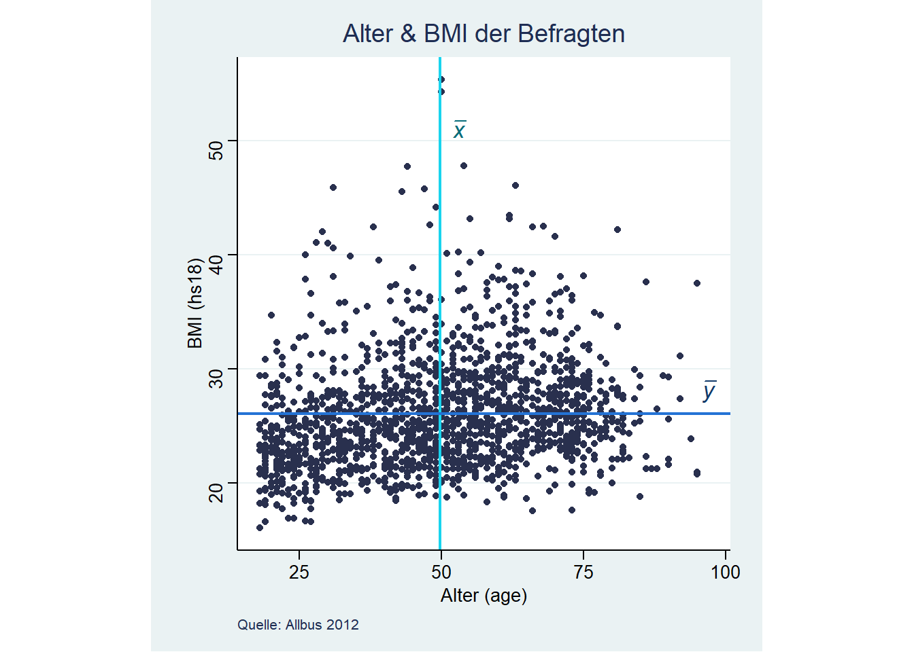
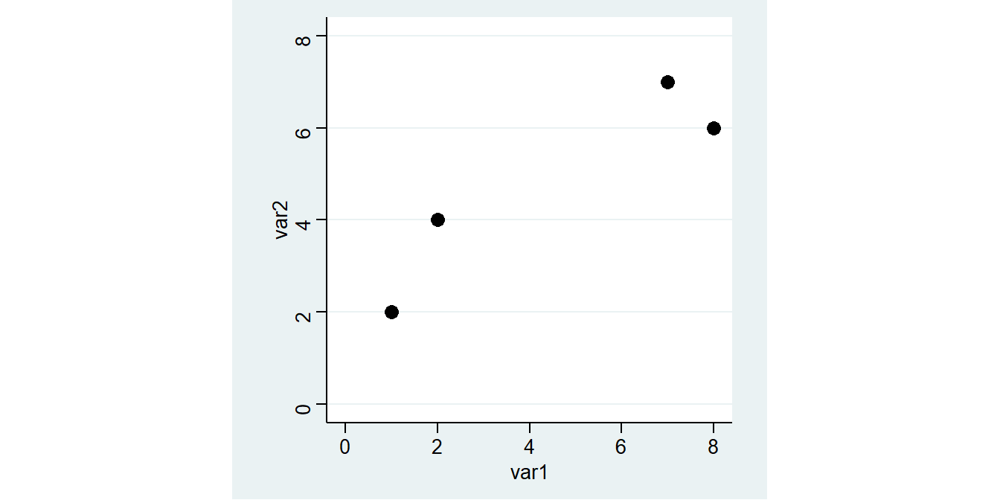
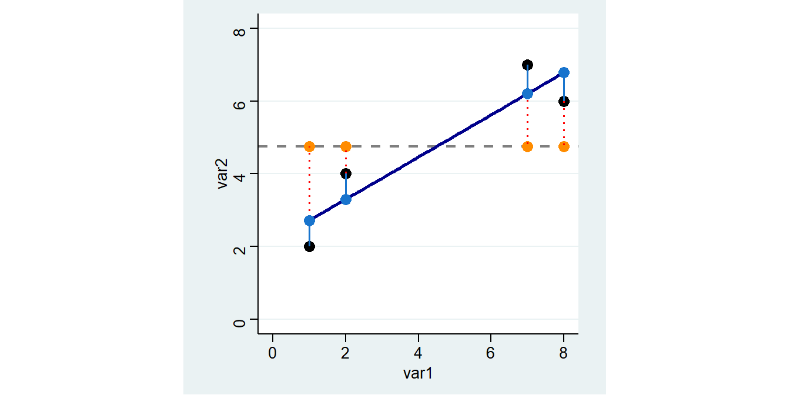
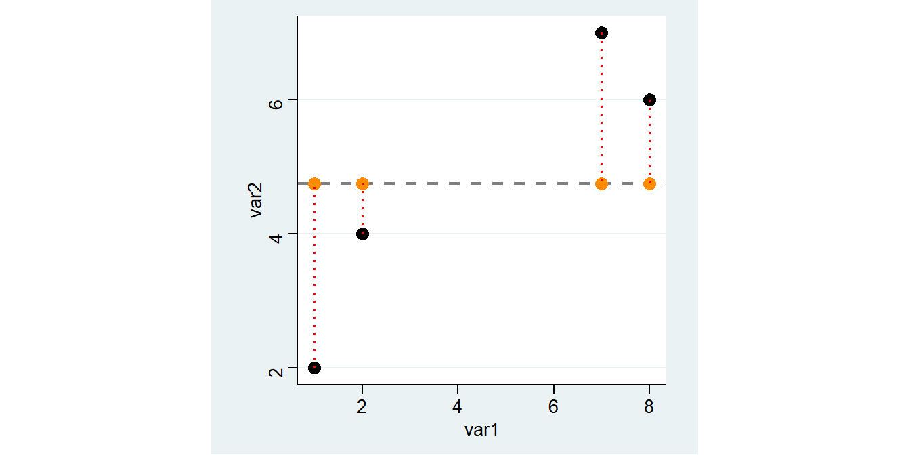

5 Zusammenhangsmaße
Zusammenhänge sind das Herz (fast) aller statistischer Analysen. Im Folgenden lernen wir die Berechnung einer Reihe von Kennzahlen kennen, welche den Zusammenhang zwischen zwei Variablen ausdrücken. Diese variieren je nachdem ob sie nur die Stäke oder auch die Richtung eines Zusammenhangs ausdrücken. Der Abstand zur Null dient dabei als Indikator für die Stärke des Zusammenhangs - je größer der Abstand zur Null, desto stärker der Zusammenhang:
| Wert der Kennzahl (\(K\)) | Grad des Zusammenhangs |
| \(K\) = 0 | Keiner |
| 0,00 ≤ \(K\) < 0,05 | Praktisch keiner |
| 0,05 ≤ \(K\) < 0,25 | Geringer |
| 0,25 ≤ \(K\) < 0,50 | Mittlerer |
| 0,50 ≤ \(K\) < 1,00 | Starker |
| \(K\) = 1,00 | Perfekter |
Zusammenhangsmaße für metrische und ordinale Variablen geben mittels der Vorzeichen auch die Zusammenhangsrichtung an, sie variieren zwischen -1 und +1.
5.1 Metrisch skalierte Variablen
Wir sehen uns den (möglichen) Zusammenhang zwischen dem Alter (age) und dem BMI (hs18) der Befragten an. Dazu schließen wir zunächst die Missings aus und wählen die Befragten aus dem Jahr 2012 aus:
(64681 observations deleted)
age: 7 missing values generated
hs18: 1859 missing values generated5.1.1 Korrelationskoeffizient
Zur Bestimmung eines Zusammenhangs zwischen zwei metrischen Variablen empfiehlt sich der Korrelationskoeffizient nach Pearson. Dieser ist definiert als die Kovarianz dividiert durch die jeweiligen Standardabweichungen der beiden Variablen und liegt im Intervall [-1,1]. Die Standardabweichung hatten wir in Session 4 kennengelernt, die Kovarianz erfasst die Lage der Datenpunkte relativ zu den Mittelwerten der beiden interessierenden Variablen (liegen Punkte > \(\bar{x}\) auch \(>\bar{y}\)?):

In Stata können wir den Korrelationskoeffizienten mit corr berechnen:
(obs=1620)
| age hs18
-------------+------------------
age | 1.0000
hs18 | 0.2127 1.0000Es handelt sich also um einen geringen Zusammenhang.
5.1.2 Regression
Regressionsmodelle zeigen uns den (linearen) Trend zwischen zwei Variablen. Hier geht es darum, um wie sich im Durchschnitt var2 verändert, wenn sich var1 um eine Einheit erhöht. var2 ist also unsere abhängige, var1 unsere unabhängige Variable - wir möchten var2 mit var1 vorhersagen. Im Folgenden sehen wir, dass Regressionsmodelle mit reg erstellt werden können und wie wir den Output interpretieren können. Falls Sie nochmal mehr zu den Grundlagen erfahren wollten, findet sich hier eine ausführlichere Erklärung.
Wir betrachten einen kleinen Beispieldatensatz mit lediglich 4 Fällen und zwei metrischen Variablen var1 und var2:

Mit Regressionsmodellen können wir lineare Zusammenhänge zwischen zwei metrischen Merkmalen untersuchen. In Stata können wir eine Regression mit dem reg Befehl berechnen:
Source | SS df MS Number of obs = 4
-------------+------------------------------ F( 1, 2) = 11.07
Model | 12.4932432 1 12.4932432 Prob > F = 0.0797
Residual | 2.25675676 2 1.12837838 R-squared = 0.8470
-------------+------------------------------ Adj R-squared = 0.7705
Total | 14.75 3 4.91666667 Root MSE = 1.0623
------------------------------------------------------------------------------
var2 | Coef. Std. Err. t P>|t| [95% Conf. Interval]
-------------+----------------------------------------------------------------
var1 | .5810811 .1746331 3.33 0.080 -.1703044 1.332467
_cons | 2.135135 .9485004 2.25 0.153 -1.945933 6.216203
------------------------------------------------------------------------------Hier steht jetzt eine ganze Menge an Informationen, die wir uns im Folgenden genauer ansehen werden.
Ein positiver Wert unter Coef. in der Zeile von var1 bedeutet, dass unsere Gerade von links nach rechts ansteigt und ein negativer eine fallende Linie bedeuten würde. Der Wert unter var1 gibt an, um wieviel sich die Gerade pro “Schritt nach rechts” nach oben/unten verändert.
Die Gerade steigt also pro Einheit von
var1um 0.5810811.
Der Wert neben _cons gibt uns Auskunft darüber, wie hoch der vorhergesagte Wert für var2 wäre, wenn var1 = 0.
Für
var1= 0 würden wirvar2= 2.135135 vorhersagen.
Außerdem erkennen wir unter R-squared die Modellgüte unseres Regressionsmodells. \(R^2\) gibt die prozentuale Verbesserung der Vorhersgen durch die Gerade aus reg im Vergleich zum arithmetische Mittel an. \(R^{2}\) bezieht sich auf die Verringerung der Residuen durch das reg-Modell im Vergleich zur Mittelwertregel.
Unser Regressionsmodell kann also 84,7% der Streuung um den Mittelwert erklären.
Außerdem sehen wir oben links in der Spalte SS die “Sum of Squares”: unter Total ist die Summe der quadrierten Abweichungen der beobachteten Werte vom arith. Mittel angegeben (die Abstände zwischen den orangen und schwarzen Punkten: 14.75). Residual gibt die Summe der Abweichungsquadrate zwischen den beobachteten Werten und den vorhergesagten Werten der Regression (die Abstände zwischen den schwarzen und den blauen Punkten:2.256..).

5.1.3 vorhergesagte Werte
Die vorhergesagten Werte aus reg var2 var1 entsprechen einfach der Summe aus dem Wert neben _cons und dem Koeffizienten neben var1 multipliziert mit dem jeweiligen Wert für var1. Wir starten also sozusagen bei var2=0 und gehen dann eben x Schritte entlang der Geraden.
var2 | Coef. Std. Err. t P>|t| [95% Conf. Interval]
-------------+----------------------------------------------------------------
var1 | .5810811 .1746331 3.33 0.080 -.1703044 1.332467
_cons | 2.135135 .9485004 2.25 0.153 -1.945933 6.216203
------------------------------------------------------------------------------Vorhergesagte Werte für var2 werden mit \(\widehat{var2}\) bezeichnet - das \(\widehat{}\) steht dabei für “geschätzt”:
\[\widehat{var2}=\texttt{Intercept} + 0.5811 \times \texttt{var1}\]
Für die erste Zeile ergibt sich also folgender vorhergesagter Wert: 2.1351+0.5811*1= 2.7162
Wir könnten also auch einen vorhergesagten Wert für einen beliebigen Wert von var1 berechnen, für 5:
5.0406Alternativ können wir uns die Tipparbeit auch sparen, indem wir erst reg laufen lassen und dann mit _b auf die Ergebnisse zugreifen:
5.0405405Mit predict können wir jeweils die vorhergesagten Werte für die Ausprägungen von var1 im Datensatz berechnen und in einer neuen Variable pred_vorher ablegen:
Hier wird also gerechnet:
\[2.1351 + 0.5810811 * 1 = 2.716216\] \[2.1351 + 0.5810811 * 2 = 3.297297\] \[2.1351 + 0.5810811 * 7 = 6.202703\] \[2.1351 + 0.5810811 * 8 = 6.783784\]
var1 var2 pred_vorher mean_var2
1 1 2 2.716216 4.75
2 2 4 3.297297 4.75
3 7 7 6.202703 4.75
4 8 6 6.783784 4.75Die Grafik oben zeigt wie Vorhersagen auf Basis des Regressionsmodells aussehen: Sie entsprechen den Werten auf der blauen Geraden (der sog. Regressionsgeraden) an den jeweiligen Stellen für var1.

5.2 Ordinal skalierte Variablen
Ein klassisches ordinales Merkmal ist die Bildung (educ):
educ |
Schulabschluss |
|---|---|
1 |
Schule beendet ohne Abschluss |
2 |
Volks-/Hauptschulabschluss bzw. Polytechnische Oberschule (8. oder 9. Klasse) |
3 |
Mittlere Reife, Realschulabschluss bzw. Polytechnische Oberschule (10. Klasse) |
4 |
Fachhochschulreife (Abschluss einer Fachoberschule etc.) |
5 |
Abitur bzw. Erweiterte Oberschule mit Abschluss 12. Klasse (Hochschulreife) |
6 |
Anderer Schulabschluss, und zwar: ______ |
7 |
Noch Schüler |
Wir sehen uns den Zusammenhang der Bildung der Befragten mit der Einstellung zum Zuzug von Asylsuchenden (mi02) an:

Wir sehen uns den (möglichen) Zusammenhang zwischen diesen beiden Merkmalen an. Dazu definieren die negativen Ausprägungen sowie die Kategorien (7) “noch Schüler” und (6) “anderer Schulabschluss” als Missing, um eine klare ordinale Rangfolge für educ zu erhalten (je höher,desto höher der Bildungsabschluss). Wir sehen uns den Zusammenhang für das Jahr 1990 an:
cd ""
use "Allbus_1980-2018.dta",clear
keep if year == 1990
mvdecode educ, mv(-9 6 7)
mvdecode mi02, mv(-9 -8 -7) educ: 65 missing values generated
mi02: 97 missing values generatedSo sieht die Verteilung zunächst in einer Kreuztabelle aus:
ALLGEMEINER | ZUZUG VON: ASYLSUCHENDEN
SCHULABSCHLUSS | UNEINGESC ZUZUG BEG GANZ UNTE | Total
-------------------+---------------------------------+----------
OHNE ABSCHLUSS | 7 18 36 | 61
VOLKS-,HAUPTSCHULE | 123 659 600 | 1,382
MITTLERE REIFE | 137 390 177 | 704
FACHHOCHSCHULREIFE | 48 101 21 | 170
HOCHSCHULREIFE | 232 287 53 | 572
-------------------+---------------------------------+----------
Total | 547 1,455 887 | 2,889 Auch hier fragen wir uns jetzt: sind die Werte von mi02 tendenziell höher oder niedriger bei höheren Werten von educ? Allerdings ist hier der Korrelationskoeffizient nicht adäquat, die hier die Abstände zwischen den Kategorien nicht gleichmäßig sind (es handelt sich ja um ordinale Merkmale). Daher müssen hier spezifische Zusammenhangsmaße für ordinale Variablen verwendet werden.
5.2.1 Spearman- Rangkorrelation
Zur Bestimmung eines Zusammenhangs zwischen zwei ordinal skalierten Variablen empfiehlt sich der Spearman-Rangkorrelationskoeffizient (\(\rho\)). Für den Rangkorrelationskoeffizienten werden die Werte der Variablen in Ränge überführt und dann mit diesen Rängen den Korrelationskoeffizient berechnet. Wir können den Rangkorrelationskoeffizienten mit spearman berechnen:
Number of obs = 2889
Spearman's rho = -0.3749
Test of Ho: educ and mi02 are independent
Prob > |t| = 0.0000Es zeigt sich also mit einem Korrelationskoeffizienten von 0.37 ein mittel-starker, negativer Zusammenhang. Das negative Vorzeichen des Zusammenhangs deutet darauf hin, dass mit einer höheren Ausprägung von educ tendenziell niedrigere Werte für mi02 einher gehen: eine höhere Schulbildung geht mit einer positiveren Haltung gegenüber dem Zuzug von Asylsuchenden einher.
5.2.2 Konkordanzmaße
Ein weiteres Zusammenhangsmaß für ordinale Variablen sind Konkordanzmaße wie Kendall’s \(\tau\). Hierfür die Werteverhältnisse gezählt:
\(\tau_{\alpha}\): Differenz der konkordaten (C) und diskordanten (D) Paarvergleiche als Anteil an allen möglichen Paarvergleichen \(\frac{n\times(n-1)}{2}\):
\[\tau_a=\frac{C-D}{\frac{n\times(n-1)}{2}}\] Nachteil: Bei Bindungen in X u. Y Maximalwerte (-1; +1) nicht zu erreichen
\(\tau_{\alpha}\): Differenz der konkordaten (C) und diskordanten (D) Paarvergleiche als Anteil an allen möglichen Paarvergleichen \(\frac{n\times(n-1)}{2}\) unter Ausschluss von Bindungen in X und Y
\[\tau_{b}=\frac{C-D}{\sqrt{(C+D+T_x)\times(C+D+T_y)}}\] Bei Bindungen in X o. Y Maximalwerte (-1; +1) nicht zu erreichen
Goodman & Kruskal’s \(\gamma\) ignoriert die Bindungen vollständig:
\[\gamma=\frac{C-D}{C+D}\]
Zur Berechnung in Stata können wir ktau verwenden:
Number of obs = 2889
Kendall's tau-a = -0.2151
Kendall's tau-b = -0.3350
Kendall's score = -897325
SE of score = 44116.299 (corrected for ties)
Test of Ho: educ and mi02 are independent
Prob > |z| = 0.0000 (continuity corrected)Auch hier zeigt sich eine Zusammenhangsstärke in der gleichen Größenordnung wie beim Rangkorrelationskoeffizienten (\(\tau_a\) = -0.2151 und \(\tau_b\) = -0.3350). Zudem ist auch hier das Vorzeichen negativ: educ korreliert negativ mit mi02. Der Wert von Kendall’s \(\tau_a\) ist deutlich niedriger als von Kendall’s \(\tau_b\), da hier der Nenner durch die Berücksichtigung aller möglichen Paarvergleiche größer wird, der Zähler aber für beide Varianten von Kendall’s \(\tau\) gleich definiert ist.
Ein weiteres Maß ist Goodman & Kruskal’s \(\gamma\), dieses bekommen wir mit der Option ,gamma in tab:
ALLGEMEINER | ZUZUG VON: ASYLSUCHENDEN
SCHULABSCHLUSS | UNEINGESC ZUZUG BEG GANZ UNTE | Total
-------------------+---------------------------------+----------
OHNE ABSCHLUSS | 7 18 36 | 61
VOLKS-,HAUPTSCHULE | 123 659 600 | 1,382
MITTLERE REIFE | 137 390 177 | 704
FACHHOCHSCHULREIFE | 48 101 21 | 170
HOCHSCHULREIFE | 232 287 53 | 572
-------------------+---------------------------------+----------
Total | 547 1,455 887 | 2,889
gamma = -0.5065 ASE = 0.021Auch Goodman & Kruskal’s \(\gamma\) deutet auf einen negativen Zusammenhang hin, hier ist die Stärke mit (-0.5065) aber deutlich höher. Dies ist auf die Berücksichtigung der Bindungen zurückzuführen: hier werden alle Bindungen ausgeschlossen, also auch Paarvergleiche mit Bindungen nur auf einer Variable. Es reduziert sich also der Nenner, somit ergibt sich im Ergebnis ein höherer Koeffizient für Goodman & Kruskal’s \(\gamma\) als für Kendall’s \(\tau_b\).
Insgesamt ist also von einem mittleren Zusammenhang zwischen educ und mi02 auszugehen.
5.3 Nominal skalierte Variablen
(64715 observations deleted)Unser Beispiel für nominal skalierte Variablen dreht sich um die Frage: Haben allein lebende Befragte eher ein Haustier als Befragte, die mit weiteren Personen zusammenleben?
Dazu betrachten wir die Variablen aq03 und dh01, später auch noch dh04:
aq03 |
Haben Sie einen Hund oder eine Katze in Ihrem Haushalt? |
1 Ja, Hund |
|
2 Ja, Katze |
|
3 Ja, beides |
|
4 Nein, keines von beiden |
|
dh01 |
Wohnen außer ihnen noch weitere Personen in diesem Haushalt? |
1 Ja |
|
2 Nein, ich lebe allein |
|
dh04 |
Gesamtzahl der Personen im Haushalt |
Ausgangspunkt der Zusammenhangsmaße für nominale Merkmale ist die Kontingenztabelle der beiden Variablen:
HUND ODER KATZE | MEHRPERSONENHAUSHALT?
IM HAUSHALT? | MEHRPERSO EINPERSON | Total
-----------------+----------------------+----------
HUND | 350 41 | 391
KATZE | 502 65 | 567
BEIDES | 116 9 | 125
KEINS VON BEIDEN | 1,784 579 | 2,363
-----------------+----------------------+----------
Total | 2,752 694 | 3,446 Um diese Tabelle für den Einstieg noch etwas übersichtlicher zu halten, fassen wir die Hunde- und Katzenbesitzer*innen zusammen. Das geht mit gen: wir formulieren darin eine Bedingung und wenn diese zutrifft wird der erste Wert eingesetzt, wenn nicht wird der zweite Wert eingesetzt. Hier fragen wir also ab, ob aq03 gleich 4 ist - dann wird eine 0 eingesetzt, ansonsten eine 1:
aq03 aq03b
1 4 0
2 2 1
3 3 1
4 4 0
5 4 0
6 4 0
7 2 1
8 4 0
9 4 0
10 1 1Die daraus resultierende Kontingenztabelle ist schön übersichtlich:
| MEHRPERSONENHAUSHALT?
aq03b | MEHRPERSO EINPERSON | Total
-----------+----------------------+----------
0 | 968 115 | 1,083
1 | 1,784 579 | 2,363
-----------+----------------------+----------
Total | 2,752 694 | 3,446 \(\rightarrow\) Wie viele Personen leben also allein und haben kein Haustier?1
5.3.1 Odds Ratio
Die Odds Ratio geben das Verhältnis der bedingten Häufigkeiten an. Wir berechnen in beiden Spalten (also getrennt nach Haushaltsgröße) jeweils die Odds, dass ein*e Befragte*r ein Haustier besitzt (also aq03b = 1). Odds sind dabei immer das Verhältnis \(\frac{interessierende\;Ausprägung}{alle\;anderen\;Ausprägungen}\). Dann setzen wir die Chancen ins Verhältnis zueinander:
\[\text{Odds Haustier in MP-HH} = \frac{968}{1784} = 0.5426009\] \[\text{Odds Haustier allein} = \frac{115}{579} = 0.1986183\] \[\text{Odds Ratio Haustier MP vs. allein} = \frac{0.5426009}{0.1986183} = 2.731878\] \[\text{Odds Ratio Haustier allein vs. MP HH} = \frac{0.1986183}{0.5426009}=0.3660486\] Interpretation:
- Alleinlebende Befragte haben im Vergleich zu Befragten, die mit anderen Personen zusammen wohnen, die 0.366-fache Chance Haustiere zu haben.
- Befragte, die mit anderen Personen zusammen wohnen, haben im Vergleich zu alleinlebenden Befragten die 2.732-fache Chance Haustiere zu haben.
Odds Ratios sind aber auch aus “größeren” Tabellen berechenbar - zB können wir auch die exakte Haushaltsgröße dh04 sowie die detaillierten Kategorien zum Haustierbesitz (aq03) verwenden:
HUND ODER KATZE | ANZAHL DER HAUSHALTSPERSONEN
IM HAUSHALT? | 1 2 3 4 5 6 7 8 10 | Total
-----------------+---------------------------------------------------------------------------------------------------+----------
HUND | 41 153 86 73 32 4 2 0 0 | 391
KATZE | 65 250 120 91 31 6 4 0 0 | 567
BEIDES | 9 43 29 26 11 5 1 0 1 | 125
KEINS VON BEIDEN | 579 938 388 342 91 16 7 2 0 | 2,363
-----------------+---------------------------------------------------------------------------------------------------+----------
Total | 694 1,384 623 532 165 31 14 2 1 | 3,446 Jetzt könnten wir den Odds Ratio für Haustierbesitz von allein Lebenden im Vergleich zu Befragten mit einer HH-Größe von 2 berechnen. Dazu setzen wir für die jeweiligen Spalten (weil die HH-Größe dh04 in den Spalten steht) die Häufigkeiten ins Verhältnis. Der Hauptunterschied ist aber, dass wir die Haustierkategorien (aq03 = 1-3) addieren müssen:
\[\text{Odds Haustier in 2P-HH} = \frac{153+250+43}{938} = 0.4754797\] \[\text{Odds Haustier allein} = \frac{41 +65 +9 }{579} = 0.1986183\] \[\text{Odds Ratio Haustier 2P-HH vs. allein} = \frac{0.4754797}{0.1986183} = 2.393937\] \[\text{Odds Ratio Haustier allein vs. 2P HH} = \frac{0.1986183}{0.4754797}=0.4177219\]
Interpretation:
- Allein lebende Befragte haben im Vergleich zu zweit lebenden Befragten die 0.418-fache Chance ein Haustier im Haushalt zu haben.
- Zu zweit lebende Befragte haben im Vergleich zu allein lebenden Befragten die 2.394-fache Chance ein Haustier im Haushalt zu haben.
\(\rightarrow\) Haben allein lebende Befragte eher Katzen als Befragte in einem Haushalt mit 4 Personen? (aq03 = 2 & 3 sind Katzenbesitzer*innen)2
5.3.2 Chi²-basierte Maße
\(\chi^2\) basiert auf dem Vergleich der beobachteten Häufigkeit mit einer (theoretischen) Verteilung, welche statistische Unabhängigkeit abbildet (Indifferenztabelle - mehr dazu). Wir bleiben bei aq03 und dh01. Den \(\chi^2\)-Wert für diese Häufigkeitstabelle bekommen wir mit , chi2:
HUND ODER KATZE | ANZAHL DER HAUSHALTSPERSONEN
IM HAUSHALT? | 1 2 3 4 5 6 7 8 10 | Total
-----------------+---------------------------------------------------------------------------------------------------+----------
HUND | 41 153 86 73 32 4 2 0 0 | 391
KATZE | 65 250 120 91 31 6 4 0 0 | 567
BEIDES | 9 43 29 26 11 5 1 0 1 | 125
KEINS VON BEIDEN | 579 938 388 342 91 16 7 2 0 | 2,363
-----------------+---------------------------------------------------------------------------------------------------+----------
Total | 694 1,384 623 532 165 31 14 2 1 | 3,446
Pearson chi2(24) = 157.1103 Pr = 0.0005.3.3 Cramer’s \(\upsilon\)
Auf Basis dieses \(\chi^2\)-Werts von 157.11 können wir Cramer’s \(\upsilon\) berechnen. Dieses ist definiert als der Quotient aus dem \(\chi^2\)-Wert und der Fallzahl multipliziert mit dem Minimum der Zeilen- und Spaltenzahl. n, erkennen wir aus dem Total rechts unten in der Tabelle. Außerdem hat unsere Tabelle 4 Zeilen und 10 Spalten, dementsprechend entspricht das Minimum hier 4:
\[ Cramer's\,\,\upsilon = \sqrt{\frac{\chi^2}{n*\,min(k-1,m-1)}}=\sqrt{\frac{157.1103}{3466*(4-1)}} = 0.01510967\]
Dieser Wert für Cramer’s \(\upsilon\) legt einen praktisch keinen Zusammenhang nahe.
.122921385.3.4 \(\phi\)
Eine Variante von Cramer’s \(\upsilon\) für 2x2-Tabellen ist \(\phi\). Dies wäre das passende Maß für die zusammengefasste Variable aller Haustierbesitzer*innen aq03b von oben und dh01:
| MEHRPERSONENHAUSHALT?
aq03b | MEHRPERSO EINPERSON | Total
-----------+----------------------+----------
0 | 968 115 | 1,083
1 | 1,784 579 | 2,363
-----------+----------------------+----------
Total | 2,752 694 | 3,446
Pearson chi2(1) = 89.0092 Pr = 0.000\[\phi= \sqrt{\frac{\chi^2}{n}}=\sqrt{\frac{89.0092}{3466}} = 0.1602\]
.160251895.4 Welches Maß richtig?
Wir haben jetzt eine ganze Reihe an Zusammenhangsmaßen kennengelernt, die folgende Liste fasst nochmal alle Varianten zusammen. Es gibt noch eine ganze Reihe weiterer Zusammenhangsmaße und diese Liste deckt lediglich die Maße ab, die wir kennengelernt haben:
- nominal skalierte Variablen
- Odds Ratio: basierend auf Kreuztabelle
tab x y - \(\chi^2\)-basierte Maße
tab x y, chi, danach Division von \(\chi^2\) durch n und Zahl der Spalten/Zeilen
- Odds Ratio: basierend auf Kreuztabelle
- ordinal skalierte Variablen
- Spearman-Rangkorrelationskoeffizient
spearman x y - Konkordanzmaße
- Kendall’s \(\tau_a\) & Kendall’s \(\tau_b\):
ktau x y - Goodman & Kruskal’s \(\gamma\):
tab x y, gamma
- Kendall’s \(\tau_a\) & Kendall’s \(\tau_b\):
- Spearman-Rangkorrelationskoeffizient
- metrische skalierte Variablen
- Zusammenhangsstärke: Pearson-Korrelationskoeffizient
corr x y - Regression zur Vorhersage von Werten auf Basis einer Variable:
reg x y
- Zusammenhangsstärke: Pearson-Korrelationskoeffizient
Ausschlaggebend ist dabei die Variable mit dem niedrigeren Skalenniveau! Ggf. können metrische Variablen durch Kategorisierung (Kapitel 3) in ordinale Variablen überführt werden.
5.5 Übungen 5
5.5.1 Übung 5-1
- Laden Sie den kumulierten Allbusdatensatz (
Allbus_1980-2018.dta) in Stata und wählen Sie die Befragten aus dem Jahr 2014 aus! Untersuchen Sie den Zusammenhang zwischen dem Alter der Befragtenageund der Dauer des Fernsehkonsums (lm02) in Minuten! Verwenden Sieageals unabhängige Variable.- Vergessen Sie nicht, die Missings mit
mvdecodezu überschreiben oder mitkeep/dropauszuschließen. - Überprüfen Sie z.B. mit
summarizefür beide Variablen, ob alle negativen Werte ausgeschlossen wurden. - Berechnen Sie das passende Zusammenhangsmaß!
- Wie stark ist der Zusammenhang?
- Welche Fernsehdauer würden Sie für eine*n 50-jährigen Befragte*n vorhersagen?
- Welche Fernsehdauer würden Sie für eine*n 51-jährigen Befragte*n vorhersagen?
- Welche Fernsehdauer würden Sie für eine*n 52-jährigen Befragte*n vorhersagen?
- Vergleichen Sie diese drei Werte: was fällt Ihnen auf wenn Sie die vorhergesagten Werte vergleichen? (Tipp: bilden Sie die Differenz zwischen den Werten!)
- Vergessen Sie nicht, die Missings mit
Tipp: keep if year == 2014 wählt die Befragten aus dem Jahr 2014 aus
5.5.2 Übung 5-2
- Laden Sie den kumulierten Allbusdatensatz (
Allbus_1980-2018.dta) in Stata und wählen Sie die Befragten aus dem Jahr 2016 aus! Untersuchen Sie den Zusammenhang zwischen der Bildung der Befragteneducund ihrer Einstellung zur Erwerbstätigkeit von Müttern (fr03b)!- Vergessen Sie nicht, die Missings mit
mvdecodezu überschreiben oder mitkeep/dropauszuschließen. Schließen Sie auch6und7ineducals Missing aus! - Erstellen Sie eine Kontingenztabelle, um zu kontrollieren, ob alle negativen Werte ausgeschlossen wurden.
- Berechnen Sie die passenden Zusammenhangsmaße!
- Wie stark ist der Zusammenhang?
- In welche Richtung deutet der Zusammenhang? Stimmen Befragte mit höherem Schulabschluss der Aussage eher zu oder eher nicht zu als Befragte mit niedrigeren Abschlüssen?
- Vergessen Sie nicht, die Missings mit
Hier die Frage zu fr03b aus dem Codebuch:
5.5.3 Übung 5-3
- Untersuchen Sie den Zusammenhang zwischen dem Geschlecht der Befragten (
cf01) und deren Unsicherheitsgefühl (cf01)?- Verwenden Sie den
Allbus2018.dta - Denken Sie daran, die Missings in
cf01auszuschließen - Berechnen Sie den Odds Ratio für Frauen sich nachts unsicher zu fühlen im Vergleich zu Männern!
- Wie stark ist der Zusammenhang? Berechnen Sie das passende \(\chi^2\)-Maß!
- Verwenden Sie den
Hier die Frage zu cf01 aus dem Codebuch:
5.5.4 Weitere Übungen 5
- Gibt es einen Zusammenhang zwischen dem BMI (
hs18) und dem Einkommen (inc) der Befragten aus dem Jahr 2014?- Laden Sie also den kumulierten Allbusdatensatz (
Allbus_1980-2018.dta) in Stata und wählen Sie die Befragten aus dem Jahr 2014 aus. - Vergessen Sie nicht, die Missings mit
mvdecodezu überschreiben. - Welches ist das passende Zusammenhangsmaß für diesen Zusammenhang?
- Berechnen Sie dementsprechend die Zusammenhängsstärke!
- Laden Sie also den kumulierten Allbusdatensatz (
- Ist die Zustimmung zur Aussage “Ich bin stolz, ein Deutscher zu sein” in kleineren Orten größer? Berechnen Sie ein geeignetes Maß für den Zusammenhang zwischen
gkpolund der entsprechenden Variable (px01)!- Berechnen Sie diesen Zusammenhang für das Jahr 2018! Laden Sie also den
Allbus2018.dta - Welches Zusammenhangsmaß können Sie verwenden? (Zur Erinnerung: das niedrigere Skalenniveau ist ausschlaggebend!)
- Berechnen Sie dementsprechend die Zusammenhängsstärke!
- Berechnen Sie diesen Zusammenhang für das Jahr 2018! Laden Sie also den
Hier die Frage zu px01 aus dem Codebuch:
- Untersuchen Sie den Zusammenhang zwischen dem Wohnortgröße (
gkpol) und dem Unsicherheitsgefühl (cf01) der befragten Frauen imAllbus2018.dta- Denken Sie daran, die Missings in
cf01auszuschließen - Berechnen Sie den Odds Ratio sich nachts unsicher zu fühlen für Bewohnerinnen aus Orten mit 5.000-19.999 Einwohnern im Vergleich im Vergleich zu Frauen aus Großstädten mit > 500.000 Einwohnern!
- Wie stark ist der Zusammenhang zwischen
gkpolundcf01hier? Berechnen Sie das passende \(\chi^2\)-Maß!
- Denken Sie daran, die Missings in
5.6 Anhang
5.6.1 Idee einer Regression
Zum Einstieg betrachten wir zunächst einen (fiktiven) Datensatz mit lediglich 4 Fällen und lediglich zwei Variablen: var1 und var2:
var1 var2
1 1 2
2 2 4
3 7 7
4 8 6Ziel der Regression ist es, den Zusammenhang zwischen diesen beiden Variablen zu bestimmen. Gibt es einen Trend, in dem Sinn, dass ein höherer Wert von var1 mit einem höheren oder niedrigeren Wert von var2 einhergeht?
Etwas anders gesagt könnte man auch fragen, welchen Wert für var2 wir vorhersagen würden, wenn wir var1 kennen. Ein Ausgangspunkt ist das arithmetische Mittel. Dieses können wir mit mean zB für var2 berechnen.3 Diesen Wert fügen wir als neue Spalte mean_var2 in den Datensatz ein:
var1 var2 mean_var2
1 1 2 4.75
2 2 4 4.75
3 7 7 4.75
4 8 6 4.75 Müssten wir eine Prognose für die Werte von
Müssten wir eine Prognose für die Werte von var2 abgeben, wäre das arith. Mittel eine gute Wahl. Die vorhergesagten Werte werden jeweils auf der Linie für das arith. Mittel liegen.

5.6.2 Residuen
Allerdings liegen wir mit dem arith. Mittel dann immer auch Stück daneben. Diese Abweichung zwischen dem tatsächlichen und dem vorhergesagten Wert wird als Residuum bezeichnet, in unserem Beispiel ist das jeweils die Differenz zwischen var2 und mean:
\[Residuum = beobachteter\, Wert \; - \; vorhergesagter\,Wert\]
Als Formel wird das in der Regel wie folgt dargestellt:
\[\epsilon_{\text{i}} = \text{y}_{i} - \hat{\text{y}}_{i}\]
Wir können also die Residuen als Differenz zwischen var2 und mean berechnen und in df ablegen:
var1 var2 mean_var2 m_abw
1 1 2 4.75 -2.75
2 2 4 4.75 -0.75
3 7 7 4.75 2.25
4 8 6 4.75 1.25
\(\rightarrow\) Was bedeutet also ein negativer oder ein positiver Wert für das Residuum?4
Die horizontale Linie für das arithm. Mittel ist aber sehr deutlich nicht die beste Methode, um die Werte für var2 vorherzusagen. In der Graphik können wir deutlich sehen, dass die Werte “weiter links”, also mit geringeren Werten für var1, auch geringere Werte für var2 aufweisen. Wir könnten also unseren Vorhersagefehler bzw. das Residuum minimieren indem wir die Linie drehen. Die Idee der Regressionsanalyse ist es dabei, die Residuuen zu minimieren. Was würde aber passieren wenn wir die Residuen aus der Mittelwertsvorhersage aufsummieren, um Sie dann zu minimieren?
5.6.3 Quadrierte Residuen
Mit tabstat ..., s(sum) können wir die Summe für eine Variable bilden:
var1 var2 mean_var2 m_abw
1 1 2 4.75 -2.75
2 2 4 4.75 -0.75
3 7 7 4.75 2.25
4 8 6 4.75 1.25 variable | sum
-------------+----------
m_abw | 0
------------------------Die Summe der Resiuden auf Basis des arith. Mittels ist immer Null!
Anders formuliert: die gestrichelten Linien nach oben sind in Summe genauso lang wie gestrichelten Linien nach unten.
Die Lösung ist die Residuen zu quadrieren. So ergibt sich eine Kennzahl, die wir minimieren können:
Source | SS df MS Number of obs = 4
-------------+------------------------------ F( 1, 2) = 11.07
Model | 12.4932432 1 12.4932432 Prob > F = 0.0797
Residual | 2.25675676 2 1.12837838 R-squared = 0.8470
-------------+------------------------------ Adj R-squared = 0.7705
Total | 14.75 3 4.91666667 Root MSE = 1.0623
------------------------------------------------------------------------------
var2 | Coef. Std. Err. t P>|t| [95% Conf. Interval]
-------------+----------------------------------------------------------------
var1 | .5810811 .1746331 3.33 0.080 -.1703044 1.332467
_cons | 2.135135 .9485004 2.25 0.153 -1.945933 6.216203
------------------------------------------------------------------------------
variable | sum
-------------+----------
m_abw2 | 14.75
------------------------ var1 var2 mean_var2 m_abw m_abw2
1 1 2 4.75 -2.75 7.5625
2 2 4 4.75 -0.75 0.5625
3 7 7 4.75 2.25 5.0625
4 8 6 4.75 1.25 1.56255.6.4 Interpretation der Regression
Die Minimierung erledigt reg für uns. Hier geben wir zuerst das Merkmal an, das auf der y-Achse liegt (die abhängige Variable) und dann das Merkmal für die x-Achse (unabhängige Variable) an. Ein positiver Wert unter Coef. in der Zeile von var1 bedeutet, dass unsere Gerade von links nach rechts ansteigt und ein negativer eine fallende Linie bedeuten würde. Der Wert unter var1 gibt an, um wieviel sich die Gerade pro “Schritt nach rechts” nach oben/unten verändert. Die Gerade steigt also pro Einheit von var1 um 0.5810811:
Source | SS df MS Number of obs = 4
-------------+------------------------------ F( 1, 2) = 11.07
Model | 12.4932432 1 12.4932432 Prob > F = 0.0797
Residual | 2.25675676 2 1.12837838 R-squared = 0.8470
-------------+------------------------------ Adj R-squared = 0.7705
Total | 14.75 3 4.91666667 Root MSE = 1.0623
------------------------------------------------------------------------------
var2 | Coef. Std. Err. t P>|t| [95% Conf. Interval]
-------------+----------------------------------------------------------------
var1 | .5810811 .1746331 3.33 0.080 -.1703044 1.332467
_cons | 2.135135 .9485004 2.25 0.153 -1.945933 6.216203
------------------------------------------------------------------------------In unserer Grafik sieht diese Gerade so aus:
5.6.5 Vorhergesagte Werte
Wie hoch ist nun der vorhergesagte Wert auf Basis der blauen Gerade?
Die vohergesagten Werte aus reg var2 var1 entsprechen einfach der Summe aus dem Wert neben _cons und dem Koeffizienten neben var1 multipliziert mit dem jeweiligen Wert für var1.5
var2 | Coef. Std. Err. t P>|t| [95% Conf. Interval]
-------------+----------------------------------------------------------------
var1 | .5810811 .1746331 3.33 0.080 -.1703044 1.332467
_cons | 2.135135 .9485004 2.25 0.153 -1.945933 6.216203
------------------------------------------------------------------------------Vorhergesagte Werte werden mit \(\widehat{var2}\) bezeichnet - der ^ steht dabei für “vorhergesagt”:
\[\widehat{var2}=\texttt{Intercept} + 0.5811 \times \texttt{var1}\]
Für die erste Zeile ergibt sich also folgender vorhergesagter Wert: 2.1351+0.5811*1= 2.7162
Also könnten wir mit gen die vorhergesagten Werte “manuell” berechnen:
Die vorhergesagten Werte können wir auch mit predict berechnen und in einer neuen Variable pred_vorher ablegen:
var1 var2 mean_var2 m_abw m_abw2 manual_vorhers pred_vorher
1 1 2 4.75 -2.75 7.5625 2.7162 2.716216
2 2 4 4.75 -0.75 0.5625 3.2973 3.297297
3 7 7 4.75 2.25 5.0625 6.2028 6.202703
4 8 6 4.75 1.25 1.5625 6.7839 6.783784Die Grafik zeigt wie Vorhersagen auf Basis des Regressionsmodells aussehen: Sie entsprechen den Werten auf der blauen Geraden (der sog. Regressionsgeraden) an den jeweiligen Stellen für var1.
 Wir können erkennen, dass die hellblauen Punkte (also die Vorhersagen des Regressionsmodells) deutlich näher an den tatsächlichen Punkten liegen als die orangen Vorhersagen auf Basis des
Wir können erkennen, dass die hellblauen Punkte (also die Vorhersagen des Regressionsmodells) deutlich näher an den tatsächlichen Punkten liegen als die orangen Vorhersagen auf Basis des mean.
5.6.6 Residuen Teil 2
Trotzdem sind auch die hellblauen Punkte nicht deckungsgleich mit den tatsächlichen Werten. Es gibt also auch hier wieder Residuen, also Abweichungen des beobachteten vom vorhergesagten Wert. Wir können diese per Hand berechnen als Differenz zwischen dem tatsächlichen und dem vorhergesagten Wert:
Oder wir können Sie mit predict neue_variable , residuals erstellen:
var1 var2 mean_var2 m_abw m_abw2 manual_vorhers pred_vorher res p_res
1 1 2 4.75 -2.75 7.5625 2.7162 2.716216 -0.7162162 -0.7162162
2 2 4 4.75 -0.75 0.5625 3.2973 3.297297 0.7027027 0.7027027
3 7 7 4.75 2.25 5.0625 6.2028 6.202703 0.7972973 0.7972973
4 8 6 4.75 1.25 1.5625 6.7839 6.783784 -0.7837838 -0.7837838Hier sind die Residuen für p_res als hellblaue Linien eingezeichnet:
\(\rightarrow\) Wie groß ist die (einfache) Summe der Residuen für pred_vorher?6
5.6.7 Modellgüte
Um zu beurteilen, um wieviel besser unsere Gerade aus reg die Werte vorhersagen kann als der mean können wir die Summe der quadrierten Residuen vergleichen. Dazu quadrieren wir also die Residuen:
var1 var2 mean_var2 m_abw m_abw2 manual_vorhers pred_vorher res res2
1 1 2 4.75 -2.75 7.5625 2.7162 2.716216 -0.7162162 0.5129657
2 2 4 4.75 -0.75 0.5625 3.2973 3.297297 0.7027027 0.4937911
3 7 7 4.75 2.25 5.0625 6.2028 6.202703 0.7972973 0.6356830
4 8 6 4.75 1.25 1.5625 6.7839 6.783784 -0.7837838 0.6143170Dann können wir die Summen der quadierten Abweichungen aus der Mittelwertregel und dem Regressionsmodell vergleichen:
Zum Beispiel können wir uns fragen, um wieviel sich die Summe der quadrierten Residuen verringert wenn wir statt des mean unser reg-Modell verwenden:
Wenn wir diese Veränderung ins Verhältnis mit dem “Ausgangswert”, also den Residuen aus der Mittelwertregel setzen, dann erhalten wir das \(R^{2}\) für unser reg-Modell. Dieses gibt die prozentuale Verringerung der Residuen durch das reg-Modell im Vergleich zur Mittelwertregel an:
.84699953Unser Regressionsmodell kann also 84,7% der Streuung um den Mittelwert erklären. Dieser Wert wird auch als \(R^2\) bezeichnet. Im Regressionsoutput können wir das \(R^2\) oben rechts unter R-squared ablesen.
Source | SS df MS Number of obs = 4
-------------+------------------------------ F( 1, 2) = 11.07
Model | 12.4932432 1 12.4932432 Prob > F = 0.0797
Residual | 2.25675676 2 1.12837838 R-squared = 0.8470
-------------+------------------------------ Adj R-squared = 0.7705
Total | 14.75 3 4.91666667 Root MSE = 1.0623
------------------------------------------------------------------------------
var2 | Coef. Std. Err. t P>|t| [95% Conf. Interval]
-------------+----------------------------------------------------------------
var1 | .5810811 .1746331 3.33 0.080 -.1703044 1.332467
_cons | 2.135135 .9485004 2.25 0.153 -1.945933 6.216203
------------------------------------------------------------------------------Außerdem sehen wir oben links in der Spalte SS die “Sum of Squares”. Hier finden wir auch die Werte von oben wieder: unter Total ist die Summe der quadrierten Abweichungen der beobachteten Werte vom arith. Mittel angegeben (14.75, sozusagen die Summe der m_abw2 von oben). Residual gibt die Summe der Abweichungsquadrate zwischen den beobachteten Werten und den vorhergesagten Werten der Regression (2.256.., Die Summe von res2).
5.6.8 Indifferenztabelle
\(\chi^2\) ergibt sich wie gesagt aus der Differenz zwischen der Indifferenztabelle und den beobachteten Häufigkeiten. Die Indifferenztabelle können wir mit ,expected aufrufen (mit nofreq blenden wir die tatsächlichen Häufigkeiten aus):
HUND ODER KATZE | MEHRPERSONENHAUSHALT?
IM HAUSHALT? | MEHRPERSO EINPERSON | Total
-----------------+----------------------+----------
HUND | 312.3 78.7 | 391.0
KATZE | 452.8 114.2 | 567.0
BEIDES | 99.8 25.2 | 125.0
KEINS VON BEIDEN | 1,887.1 475.9 | 2,363.0
-----------------+----------------------+----------
Total | 2,752.0 694.0 | 3,446.0 Ausgangspunkt für diese Indifferenztabelle sind die relativen Häufigkeiten der tatsächlich beoachteten Werte:
HUND ODER KATZE | MEHRPERSONENHAUSHALT?
IM HAUSHALT? | MEHRPERSO EINPERSON | Total
-----------------+----------------------+----------
HUND | 10.16 1.19 | 11.35
KATZE | 14.57 1.89 | 16.45
BEIDES | 3.37 0.26 | 3.63
KEINS VON BEIDEN | 51.77 16.80 | 68.57
-----------------+----------------------+----------
Total | 79.86 20.14 | 100.00 0.26 % der Befragten wohnen alleine (dh01 = 2) und haben einen Hund und eine Katze (aq03=3).
Uns interessieren hier nur die Randverteilungen aus Sum: 3.63 % der Befragten haben einen Hund und eine Katze (aq03=3). 20.14 % der Befragten wohnen alleine (dh01 = 2).
| MEHRPERSO | EINPERSON | Total | |
|---|---|---|---|
| HUND | A | E | 0.1135 |
| KATZE | B | F | 0.1645 |
| BEIDES | C | G | 0.0363 |
| KEINES VON BEIDEM | D | H | 0.6857 |
| Total | 0.7986 | 0.2014 | 1 |
Wären beide Merkmale unabhängig voneinander, würden wir erwarten, dass die Wahrscheinlichkeit für das Auftreten einer Merkmalskombination dem Produkt der Einzelwahrscheinlichkeiten entspricht (das ist die “Indifferenz”): \(P(A\cup B) = P(A) \times P(B)\). Bspw. ergibt sich der erwartete Wert für die Zellen dann aus der relativen Randverteilung multipliziert mit der Gesamtfallzahl:
für Zelle
B:0.1645\(\times\)0.7986\(\times\) 3446 = 452.8102.für Zelle
C:0.0363\(\times\)0.7986\(\times\) 3446 = 99.8259.für Zelle
H:0.6857\(\times\)0.2014\(\times\) 3446 = 475.8915.
Dies sind auch die Werte, die Stata uns oben mit tab aq03 dh01, expected nofreq ausgegeben hatte.
\(\chi^2\) ist dann die summierte Differenz zwischen dieser Indifferenztabelle (also der erwarteten Verteilung bei Unabhängigkeit beider Merkmale) und den beobachteten Häufigkeiten: je größer die Differenz, desto unwahrscheinlicher ist es, dass beide Merkmale unabhängig sind.
579 Personen leben allein und ohne Haustier.↩︎
Nein - weil \(\text{Odds Haustier in 4P-HH} = \frac{73+91+26}{342} = 0.5555556\) und \(\text{Odds Haustier allein} = \frac{41 +65 +9 }{579} = 0.1986183\), dementsprechend \(\text{Odds Ratio Haustier allein vs. 4P HH} = \frac{0.1986183}{0.5555556}=0.3575129\)↩︎
Ein positiver Wert des Residuums bedeutet, dass der beobachtete Wert größer als der vorhergesagte Wert ist. Die Regressionsgerade unterschätzt also den Wert. Ein negatives Residuum bedeutet dementsprechend, dass die Regressionsgerade den Wert überschätzt - der wahre Wert ist niedriger als der vorhergesagte Wert. Siehe Formeln↩︎
Die Option
noheadermacht den Output vonregetwas übersichtlicher.↩︎Die (einfache, unquadrierte) Summe der Resiuden beträgt auch hier Null.↩︎